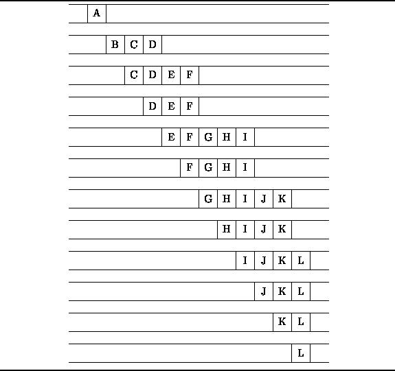

Data Structures and Algorithms
with Object-Oriented Design Patterns in C++
Data Structures and Algorithms
with Object-Oriented Design Patterns in C++
The FIFO nature of queues makes them useful in certain algorithms.
E.g., we will see in Chapter  that a queue
is an essential data structure for many different graph algorithms.
In this section we illustrate the use of a queue
in the breadth-first traversal of a tree.
that a queue
is an essential data structure for many different graph algorithms.
In this section we illustrate the use of a queue
in the breadth-first traversal of a tree.
Figure shows an example of a tree.
A tree is comprised of nodes (indicated by the circles)
and edges (shown as arrows between nodes).
We say that the edges point from the parent node
to a child node.
The degree of a node
is equal to the number of children of that node.
E.g., node A in Figure has degree three
and its children are nodes B, C, and D.
A child and all of its descendents is called a subtree .
One way to represent such a tree is to use a collection of linked structures.
Consider the following class definition which is an abridged version
of the NaryTree class described in Chapter .
class NaryTree : public Object
{
Object* key;
unsigned int const degree;
Array<NaryTree*> subtree;
public:
Object& Key () const;
unsigned int Degree () const;
NaryTree& Subtree (unsigned int) const;
};
Each NaryTree object represents one node in a tree.
The member variable degree keeps track of the degree of the node
and the variable subtree is an array of pointers to
the children of the node.
The key field points to an object which represents
the contents of the node.
E.g. in Figure , each node carries a one-character label.
The key field is intended to be used to represent that label.
The member functions Key, Degree, and Subtree
provide read-only access to the corresponding private member variables.
One of the essential operations on a tree
is a tree traversal .
A traversal visits one-by-one all the nodes in a given tree.
To visit a node means to perform some computation
using the information contained in that node--e.g., print the key.
The standard tree traversals are discussed in Chapter .
In this section we consider a traversal which is based on
the levels of the nodes in the tree.
Each node in a tree has an associated level
which arises from the position of that node in the tree.
E.g., node A in Figure is at level 0,
nodes B, C, and D are at level 1, etc.
A breadth-first traversal
visits the nodes of a tree in the order of their levels.
At each level, the nodes are visited from left to right.
For this reason, it is sometimes also called a
level-order traversal .
The breadth-first traversal of the tree in Figure
visits the nodes from A to L in alphabetical order.
One way to implement a breadth-first traversal of a tree is to make use of a queue as follows: To begin the traversal, the root node of the tree is enqueued. Then, we repeat the following steps until the queue is empty:
illustrates the breadth-first traversal algorithm
by showing the contents of the queue
immediately prior to each iteration.

Figure: Queue Contents during the Breadth-First Traversal of the Tree in Figure
 Copyright © 1997 by Bruno R. Preiss, P.Eng. All rights reserved.
Copyright © 1997 by Bruno R. Preiss, P.Eng. All rights reserved.